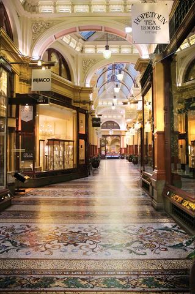

About Us
Mr Wares offers well-crafted giftware, home ware and accessories sourced from throughout Australia and across the globe.
Mr Wares seeks quality-based products from specialist manufacturers with proud and ongoing commitments to craftsmanship, utility, sustainability and socially responsible practices.
Mr Wares values contemporary heirlooms over disposable fashion; classic designs, crafted using traditional techniques, guaranteed to enrich contemporary living with a moment of joy or a lifetime of service.